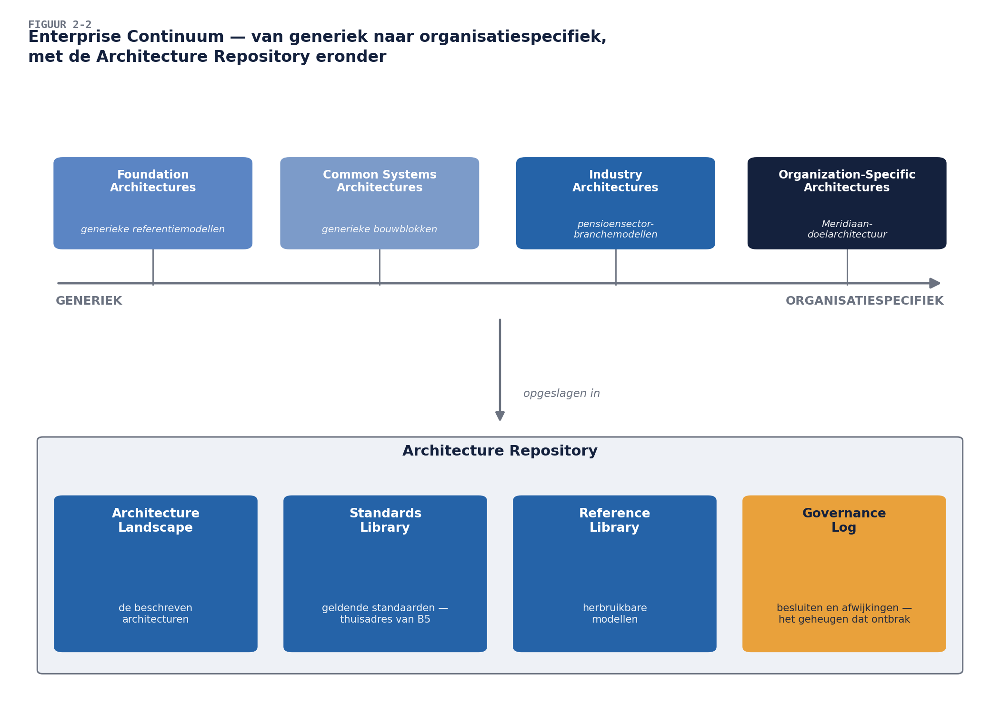

Business & Enterprise Architectuur — Niveau 1
Deel 2 · Reader — De ADM: de motor van TOGAF
Positionering. Deze cursus bereidt voor op TOGAF® EA Foundation (OGEA-101) en ArchiMate® 3 Part 1 en vervangt het officiële examenmateriaal van The Open Group niet. Dit deel is het meest examendichte deel van niveau 1: de ADM-fasen, hun doelen en hun samenhang zijn kernstof van OGEA-101.
Leerdoelen
Na dit deel kun je:
- de Architecture Development Method (ADM) beschrijven als cyclische methode en haar fasen in volgorde benoemen;
- per fase het doel en de belangrijkste resultaten op hoofdlijnen weergeven;
- uitleggen waarom Requirements Management in het midden van de cyclus staat en wat dat praktisch betekent;
- het iteratieve karakter van de ADM toelichten: de cyclus is geen waterval;
- de begrippen deliverable, artifact en building block onderscheiden;
- de functie van het Enterprise Continuum en de Architecture Repository op kennismakingsniveau uitleggen;
- voor een concrete opgave (de herstart van WGP bij Meridiaan) schetsen wat elke fase zou opleveren.
1. Casus: “Doe het dan maar volgens de methode”
De pitch die je in deel 1 schreef, is aangeslagen. De directie van Meridiaan heeft de architectuurfunctie een eerste concrete opdracht gegeven, met een venijnige staart: “Het werkgeversdossier moet opnieuw. Laat maar zien hoe dat gaat als het wél volgens een methode loopt.”
Dat is precies waarvoor de ADM bestaat: een herhaalbare route van ambitie naar gerealiseerde verandering, waarbij elke stap voortbouwt op de vorige en niets belangrijks aan het toeval wordt overgelaten. In dit deel doorlopen we de hele cyclus één keer op verkenningsdiepte, steeds met de vraag: wat had deze fase bij WGP 2.0 voorkomen? De delen 3 t/m 9 zoomen daarna per fase (of fasegroep) in.

2. De ADM in vogelvlucht
De ADM bestaat uit een voorbereidende fase, acht fasen in een ring (A t/m H) en één permanente activiteit in het centrum:
| Fase | Naam | In één zin |
|---|---|---|
| Preliminary | Voorbereiding | de architectuurfunctie zelf inrichten: principes, raamwerk-tailoring, mandaat |
| A | Architecture Vision | de opgave afbakenen, stakeholders en hun concerns kennen, de visie en het Statement of Architecture Work |
| B | Business Architecture | de businessarchitectuur van uitgangssituatie (baseline) en doel (target) |
| C | Information Systems Architectures | idem voor data- én applicatiearchitectuur |
| D | Technology Architecture | idem voor de technologie |
| E | Opportunities & Solutions | van gewenst naar haalbaar: werkpakketten, transitiearchitecturen, eerste routekaart |
| F | Migration Planning | de routekaart definitief: volgorde, kosten, afhankelijkheden, in de plannen van de organisatie |
| G | Implementation Governance | bewaken dat de realisatie de architectuur volgt: contracten, toetsing, afwijkingen |
| H | Architecture Change Management | de architectuur levend houden: wijzigingen beoordelen, nieuwe cyclus starten |
| — | Requirements Management | permanent: requirements vastleggen, wijzigingen erop verwerken, elke fase voeden |
Drie observaties die belangrijker zijn dan het rijtje zelf:
De volgorde is een redenering. Eerst weten waarom en voor wie (A), dan wat de business nodig heeft (B), dan pas welke informatievoorziening © en technologie (D) daarbij past. Wie bij technologie begint — “we nemen platform X en kijken dan wat het kan” — draait de redenering om. WGP 2.0 deed exact dat, drie keer tegelijk (bevinding B5).
B–C–D beschrijven telkens twee toestanden. Elke domeinfase levert een baseline- én een targetarchitectuur, plus de gap-analyse ertussen. Zonder beschreven doel valt niet te toetsen (B14); zonder beschreven uitgangssituatie valt niet te plannen (B3). De gap is de grondstof voor E en F.
De cyclus eindigt niet — hij herbegint. Fase H beoordeelt wijzigingen (nieuwe wetgeving, een fusie, een gestrand project) en besluit of een nieuwe ronde nodig is, en met welke scope. Architectuur is daarmee geen project met een einddatum maar een doorlopende functie — het verschil tussen een rapport en een stuur.
3. De fasen nader bekeken
3.1 Preliminary: het huis op orde
Doel: de organisatie gereed maken om architectuur te bedrijven. Hier bepaal je de reikwijdte van de enterprise (deel 1, §2.2), richt je de architectuurfunctie in, stel je de architectuurprincipes vast en pas je het raamwerk aan op de organisatie (tailoring). Voor Meridiaan is dit deel 1 en dit deel zelf: de functie bestaat net, de principes komen in deel 9 aan bod.
Examensignaal. Preliminary hoort bij de ADM maar zit niet in de ring: hij wordt niet elke cyclus opnieuw volledig doorlopen. Herijking gebeurt wanneer fase H daar aanleiding toe geeft.
3.2 Fase A — Architecture Vision: de opgave scherp
Doel: van een vage ambitie (“het werkgeversdossier moet opnieuw”) naar een scherpe, gedragen opgave. Kernactiviteiten: stakeholders en concerns identificeren, de businessdoelen en -drijfveren expliciteren, de scope afbakenen, risico’s benoemen, en dit vastleggen in de Architecture Vision en het Statement of Architecture Work — het “contract” tussen architectuurfunctie en opdrachtgever over wat deze cyclus gaat opleveren.
Bij WGP 2.0 ontbrak fase A volledig: er was een projectopdracht, geen architectuurvisie. Daardoor kon B11 gebeuren (Deelnemersadministratie nooit gehoord — geen stakeholderanalyse) en B14 (geen beschreven eindsituatie — geen visie om naar toe te werken). Deel 3 behandelt fase A volledig.
3.3 Fase B — Business Architecture
Doel: beschrijven hoe de organisatie waarde levert — organisatie, capabilities, processen, informatie op businessniveau — in baseline en target. Voor het werkgeversdossier: welke capabilities raakt dit (premie-inning, werkgeversonboarding, gegevensaanlevering)? Welke processen veranderen? Wat betekent “werkgever” op businessniveau — één begrip of terecht meerdere?
Fase B is ook de plek waar de businessarchitectuur-discipline (BIZBOK) de ADM binnenkomt: capability maps en waardestromen zijn de gangbare technieken. Deel 4 behandelt fase B; deel 12 verdiept de technieken.
3.4 Fase C — Information Systems Architectures
Twee architecturen in één fase: data en applicatie. De datakant beantwoordt: welke gegevensdomeinen zijn er, wat zijn de definities, waar liggen de bronnen (het antwoord op B7 — drie definities van “werkgever” hadden hier één definitie mét gedocumenteerde varianten geworden, of drie expliciet onderscheiden begrippen). De applicatiekant beantwoordt: welke applicaties ondersteunen de capabilities, hoe hangen ze samen, wat is dubbel (B12), wat raakt een verandering (B3).
De volgorde binnen C is niet dogmatisch; data en applicatie worden vaak parallel of iteratief uitgewerkt. Delen 5 en 6 behandelen ze afzonderlijk.
3.5 Fase D — Technology Architecture
Doel: de technologie die de applicaties en data draagt — platformen, infrastructuur, standaarden — in baseline en target. Hier horen de keuzes thuis die WGP 2.0 per deelproject liet nemen (B5): niet “welke technologie is het leukst”, maar “welke standaarden gelden, waar wijken we bewust af, en wie besluit daarover”. Deel 7.
3.6 Fase E — Opportunities & Solutions: van gewenst naar haalbaar
Doel: de gaps uit B–C–D omzetten in uitvoerbare verandering. Kernbegrippen: werkpakketten (samenhangende clusters van veranderingen), transitiearchitecturen (bewust ontworpen tussenstations — de organisatie springt zelden in één keer van baseline naar target) en de eerste versie van de routekaart. Hier valt ook het besluit over hergebruik versus bouwen versus kopen — op landschapsniveau, niet per deelproject.
3.7 Fase F — Migration Planning: de routekaart definitief
Doel: de routekaart uit E confronteren met de werkelijkheid van de organisatie: budgetcycli, lopende projecten, capaciteit, afhankelijkheden. Resultaat: een Implementation and Migration Plan dat is ingebed in de portfolio- en projectbesturing — architectuur die niet in de plannen van de organisatie landt, blijft papier. E en F samen zijn het onderwerp van deel 9 (op hoofdlijnen) en van niveau 2, deel 17.
3.8 Fase G — Implementation Governance: bewaken zonder te verstikken
Doel: zorgen dat wat gebouwd wordt de architectuur volgt. Instrument: het Architecture Contract tussen architectuurfunctie en realiserende partijen, plus toetsing en een nette omgang met afwijkingen (afwijken mág — ongedocumenteerd afwijken niet). Dit is de fase waar de poortwachter-versus-adviseurspanning uit deel 1 concreet wordt; de balans is het onderwerp van deel 19 (niveau 2). Bij WGP 2.0: B9 — er wás geen G.
3.9 Fase H — Architecture Change Management: levend houden
Doel: de architectuur en de werkelijkheid bij elkaar houden. Wijzigingsverzoeken beoordelen (klein: verwerken; groot: nieuwe ADM-cyclus met passende scope), de waarde van de architectuurfunctie monitoren, en het moment herkennen waarop herijking van de principes of het raamwerk zelf nodig is.
3.10 Requirements Management: het kloppend hart
In het centrum van de figuur, en dat is betekenisvol: elke fase produceert en consumeert requirements, en requirements veranderen tijdens de cyclus. Requirements Management is geen fase die je “doet” en afvinkt, maar een permanente administratie: nieuwe of gewijzigde requirements worden vastgelegd, beoordeeld op impact, en aan de juiste fase toegevoerd — ook als die fase al gepasseerd is. Wie in fase D ontdekt dat een businessrequirement onhoudbaar is, gaat via het centrum terug naar B; de methode voorziet erin, in plaats van dat het “scope creep” of “terugkomen op besluiten” heet.
Bij WGP 2.0 was B11 (requirements Deelnemersadministratie nooit opgehaald) niet alleen een fase A-gebrek maar ook een Requirements Management-gebrek: er was geen plek waar zulke requirements hadden kúnnen landen.
4. De ADM is geen waterval
De ring-tekening wekt de indruk van een strikte volgorde. Drie correcties, alle drie examenrelevant én praktijkrelevant:
- Iteratie binnen en tussen fasen. De TOGAF Standard beschrijft expliciet iteratiepatronen: rondjes binnen B–C–D om baseline en target scherp te krijgen, rondjes tussen A en B–D wanneer de visie moet worden bijgesteld, rondjes over E–F bij het plannen. De pijlen in de ring zijn de hoofdroute, niet de enige route.
- Diepgang per cyclus verschilt. Een cyclus kan de hele enterprise op hoofdlijnen beschrijven (brede, ondiepe ronde) of één domein in detail (smalle, diepe ronde). De scope-afspraak daarover ís fase A.
- Fasen kunnen parallel lopen waar afhankelijkheden dat toelaten — data- en applicatiearchitectuur in C zijn het klassieke voorbeeld.
De praktische samenvatting: de ADM schrijft voor wát er geregeld moet zijn en in welke afhankelijkheid — niet dat de organisatie in strakke pas door acht stations marcheert. Dit is ook het eerste antwoord op de agile-vraag uit deel 1 (§3.3): korte cycli met beperkte scope zijn volledig ADM-conform. Deel 19 bouwt hierop voort.
5. Deliverables, artifacts en building blocks
Drie begrippen die het Foundation-examen graag toetst en die in de praktijk voor spraakverwarring zorgen:
- Een deliverable is een formeel, contractueel gespecificeerd werkproduct dat wordt beoordeeld en ondertekend — bijvoorbeeld het Statement of Architecture Work of het Architecture Definition Document.
- Een artifact is een afzonderlijk beschrijvingsproduct: een catalogus (lijst), matrix (relatie) of diagram (tekening). Artifacts vullen deliverables. Een stakeholdercatalogus en een applicatie-communicatiediagram zijn artifacts.
- Een building block is een herbruikbare component van business-, IT- of architectuurcapaciteit. Architecture Building Blocks (ABB’s) beschrijven de benodigde capaciteit (“een dienst voor werkgeversauthenticatie”); Solution Building Blocks (SBB’s) zijn de concrete invulling (“component X van leverancier Y”). ABB’s horen bij B–D; de vertaling naar SBB’s gebeurt in E.
Ezelsbrug: deliverables beloof je, artifacts maak je, building blocks hergebruik je. B12 (herbouw van bestaande functionaliteit) is in deze taal: er was geen ABB/SBB-administratie waaruit hergebruik kon blijken.
6. Enterprise Continuum en Architecture Repository
Waar blijft al dat materiaal? Twee ordeningsconcepten, hier op kennismakingsniveau (deel 9 gaat dieper):
Het Enterprise Continuum is een ordeningsprincipe: architectuur- en oplossingsmateriaal loopt van generiek (Foundation Architectures, branchemodellen) naar organisatiespecifiek (jouw doelarchitectuur). Het nut: je hoeft niet alles zelf te verzinnen — een pensioensector-referentiemodel staat “links” van de Meridiaan-architectuur en voedt haar.
De Architecture Repository is de opslagplaats zelf, met onder meer het Architecture Landscape (de beschreven architecturen), de Standards Library (de geldende standaarden — het thuisadres voor het antwoord op B5), het Reference Library (herbruikbare modellen) en het Governance Log (besluiten en afwijkingen — het geheugen dat bij WGP 2.0 ontbrak).

7. De cyclus toegepast: de herstart van het werkgeversdossier
Als sluitstuk de casusvraag van de directie. Zo ziet één nette cyclus er op hoofdlijnen uit — en dit schema is tevens de agenda van de rest van niveau 1:
| Fase | Voor het werkgeversdossier | Cursusdeel |
|---|---|---|
| A | stakeholderanalyse (mét Deelnemersadministratie), concerns, scope, visie, Statement of Architecture Work | 3 |
| B | capabilities en processen rond werkgevers; het begrip “werkgever” op businessniveau | 4 |
| C-data | gegevensdomeinen, definities, bronregistraties | 5 |
| C-applicatie | landschapskaart, raakvlakken, dubbelingen | 6 |
| D | technologiestandaarden en platformkeuzes | 7 |
| E–F | werkpakketten, transitiearchitectuur, routekaart | 9 (hoofdlijnen) |
| G–H | toetsing, afwijkingen, levend houden | 9 (hoofdlijnen) |
Let op wat hier gebeurt: de post-mortembevindingen uit deel 1 zijn stuk voor stuk terug te brengen tot een fase die werd overgeslagen. Dat is geen toeval en geen achterafwijsheid — het is de reden dat de methode bestaat.
8. Samenvatting
- De ADM is een cyclische methode: Preliminary, A t/m H, met Requirements Management permanent in het centrum.
- De volgorde is een redenering (waarom → business → informatievoorziening → technologie), geen marsroute: iteratie, parallelliteit en variërende diepgang horen bij de methode.
- B, C en D leveren telkens baseline, target en gap; E en F maken daar uitvoerbare verandering van; G bewaakt de realisatie; H houdt het geheel levend.
- Requirements Management is een permanente administratie die elke fase voedt — requirements mogen veranderen, mits beheerd.
- Deliverables beloof je, artifacts maak je, building blocks hergebruik je; ABB beschrijft de behoefte, SBB de invulling.
- Enterprise Continuum ordent van generiek naar specifiek; de Architecture Repository is de opslag, inclusief Standards Library en Governance Log.
Begrippenlijst
| Begrip | Omschrijving |
|---|---|
| ADM | Architecture Development Method: Preliminary + fasen A–H + Requirements Management |
| Architecture Vision | fase A-resultaat: scherpe, gedragen opgave |
| Statement of Architecture Work | “contract” over wat de cyclus oplevert |
| Baseline / target / gap | uitgangssituatie, doel, en het verschil — per domeinfase |
| Transitiearchitectuur | bewust ontworpen tussenstation tussen baseline en target |
| Architecture Contract | afspraak tussen architectuurfunctie en realiserende partij (fase G) |
| Deliverable / artifact / building block | beloofd werkproduct / beschrijvingsproduct / herbruikbare component |
| ABB / SBB | Architecture resp. Solution Building Block: behoefte resp. invulling |
| Enterprise Continuum | ordening van generiek naar organisatiespecifiek |
| Architecture Repository | opslag: landscape, standards, references, governance log |
Verder lezen
- The Open Group, TOGAF® Standard, 10th Edition — ADM-hoofdstukken (kernexamenstof) en het deel over het Enterprise Continuum
- Voor de iteratiepatronen: de ADM Techniques-onderdelen over Applying Iteration to the ADM
Volgende deel: fase A in de diepte — stakeholders, concerns en de architectuurvisie voor het werkgeversdossier.